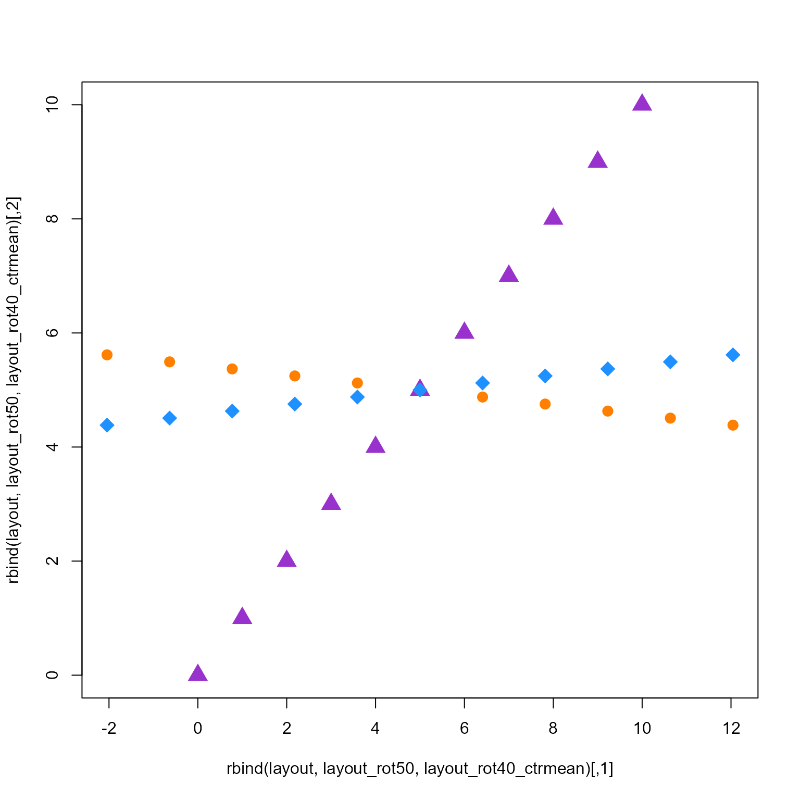

Rotate igraph layout coordinates
rotate_igraph_layout( g = NULL, degrees = 0, reflect = c("none", "x", "y", "z"), center = NULL, center_rule = c("origin", "mean", "median", "min", "max"), rotation_axes = c(1, 2), spread_labels = TRUE, do_reorder = FALSE, layout = NULL, ... )
Arguments
| g |
|
|---|---|
| degrees | numeric value indicating the degrees to rotate layout coordinates, where 360 degrees is one complete rotation. |
| reflect |
|
| center |
|
| center_rule |
|
| rotation_axes |
|
| spread_labels, do_reorder |
|
| layout |
|
| ... | additional arguments are passed to
|
Value
igraph when input g is supplied, otherwise numeric matrix.
Details
This function rotates igraph layout coordinates by calling
the function rotate_coordinates(). The input can either be
g as igraph object, or layout as a numeric matrix.
This function also optionally reflects coordinates for
one or more axes.
When both g and layout are supplied, the coordinates are
used from layout, rotated, then stored in the g igraph object
as a graph attribute, using igraph::graph_attr(g, "layout").
When only g is supplied, it is expected to contain
layout coordinates in graph attributes, obtained with
igraph::graph_attr(g, "layout").
When only layout is supplied, and no g igraph object
is supplied, this function serves only as a wrapper to
rotate_coordinates().
Note that the reflect is applied before degrees. To change
the order, call this function multiple times.
Rotation code kindly contributed by Don MacQueen to the maptools
package, and is reproduced here to avoid a dependency on maptools
and therefore the sp package.
This function also calls other useful helper functions,
when spread_labels=TRUE it calls spread_igraph_labels() to
position labels around each node based upon the angle of
incoming edges, which has the effect of reducing label overlaps.
When do_reorder=TRUE it calls reorderIgraphNodes() which
sorts nodes within a nodeset by color then by label, to help
visually group similar nodes together in equivalent positions
in the layout.
See also
Other jam cnet igraph functions:
adjust_cnet_nodeset(),
adjust_cnet_set_relayout_gene(),
get_cnet_nodeset(),
nudge_igraph_node()
Other jam igraph functions:
cnet2df(),
cnet2im(),
cnetplotJam(),
cnetplot_internalJam(),
color_edges_by_nodes(),
drawEllipse(),
enrichMapJam(),
fixSetLabels(),
igraph2pieGraph(),
jam_igraph(),
jam_plot_igraph(),
layout_with_qfrf(),
layout_with_qfr(),
memIM2cnet(),
mem_multienrichplot(),
rectifyPiegraph(),
relayout_with_qfr(),
removeIgraphBlanks(),
removeIgraphSinglets(),
reorderIgraphNodes(),
spread_igraph_labels(),
subgraph_jam(),
subsetCnetIgraph(),
subset_igraph_components(),
with_qfr()
Examples
layout <- cbind(0:10, 0:10); layout_rot50 <- rotate_igraph_layout(layout=layout, degrees=50); layout_rot40_ctrmean <- rotate_igraph_layout(layout=layout, degrees=40, center_rule="mean"); plot(rbind(layout, layout_rot50, layout_rot40_ctrmean), col=rep(c("darkorchid", "darkorange1", "dodgerblue"), each=11), pch=rep(c(17, 20, 18), each=11), cex=2);if (require(igraph)) { g <- igraph::make_graph( ~ A-B-C-D-A, E-A:B:C:D, F-G-H-I-F, J-F:G:H:I, K-L-M-N-K, O-K:L:M:N, P-Q-R-S-P, T-P:Q:R:S, B-F, E-J, C-I, L-T, O-T, M-S, C-P, C-L, I-L, I-P); g <- relayout_with_qfr(g, repulse=8); g2 <- rotate_igraph_layout(g, degrees=45); opar <- par("mfrow"=c(1,2)); on.exit(par(opar)); jam_igraph(g, main="original layout", node_factor=0.6, label_dist_factor=7); jam_igraph(g2, main="rotated 45 degrees", node_factor=0.6, label_dist_factor=7); }